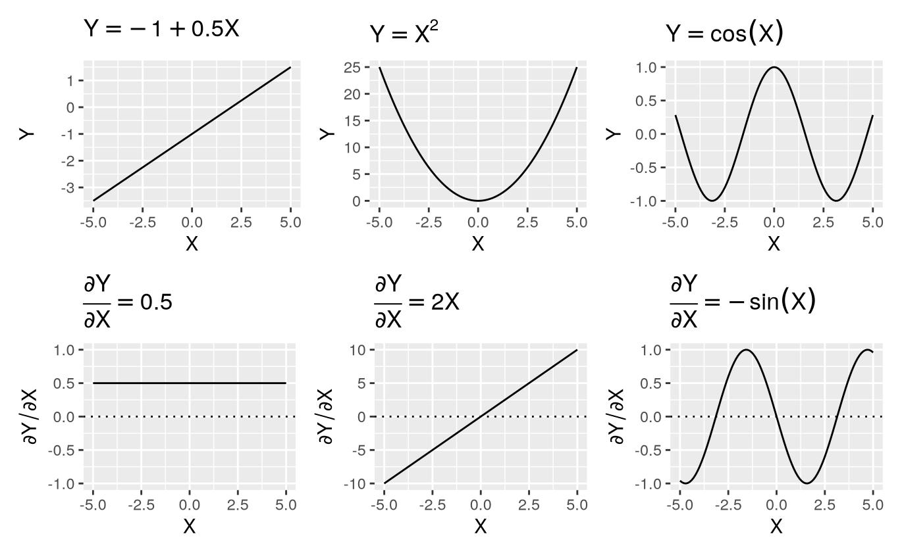
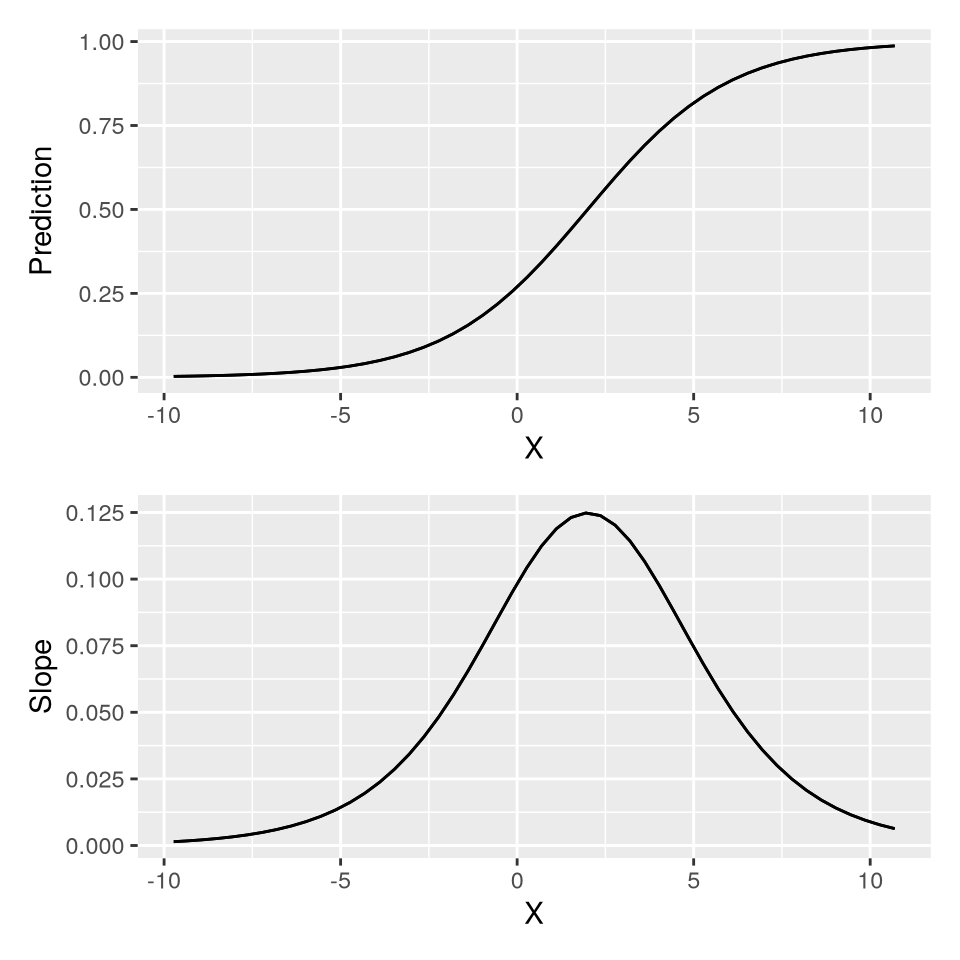
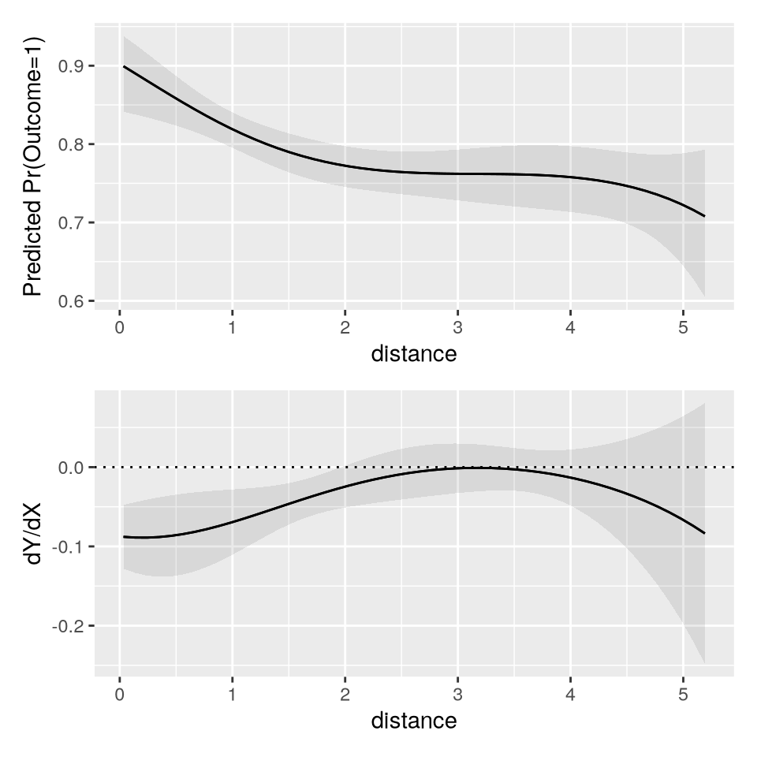
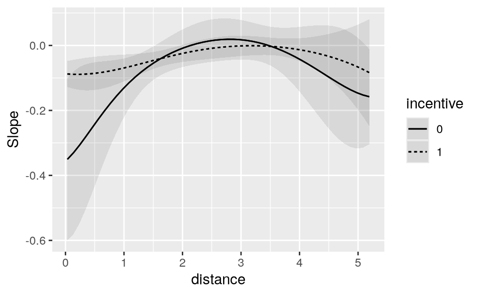
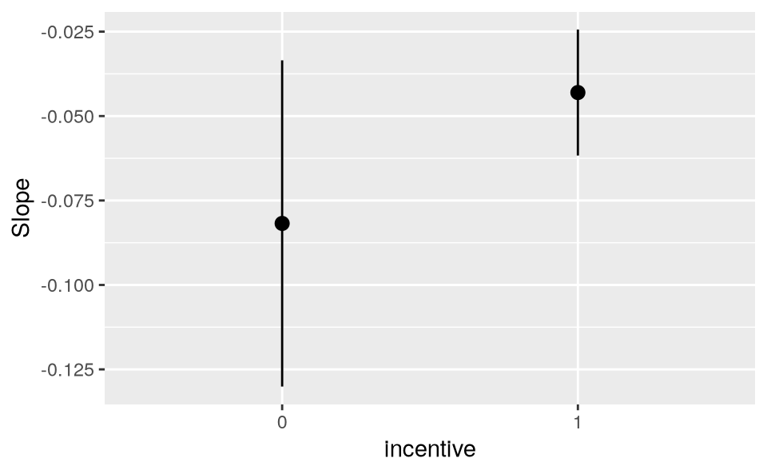

7 斜率
从模型到意义 - 中文翻译
来源：Vincent Arel-Bundock，Model to Meaning: How to Interpret Statistical Models in R and Python - 第 7 章 斜率。 来源说明：截至 2026-09-19，修订版 870f15a0 的公开仓库不包含本章完整的 .qmd 源文件。本页面翻译自同日下载的公开 HTML 快照。因此，R/Python 代码和图形均以静态形式展示；本网站未重新执行上游代码。 网站文本 (C) 2025 Vincent Arel-Bundock，保留所有权利；marginaleffects 软件代码依据 GPL-3 许可。 本页面是中文翻译，并非原文；翻译和发布依据本站 Notes 页面所使用的授权声明进行。
A slope measures how the predicted value of the outcome \Y\ responds to changes in a focal predictor \X\, when we hold other covariates at fixed values. It is often the main quantity of interest in an empirical analysis, when a researcher wants to estimate an effect or the strength of association between two variables. Slopes belong to the same toolbox as the counterfactual comparisons explored in Chapter 6. Both quantities help us answer a counterfactual query: What would happen to a predicted outcome if one of the predictors were slightly different?
理解斜率的一个难点在于，它在形式上是用微积分语言定义的。本章不深入理论，而是侧重直觉，略去大部分技术细节，并通过图形示例让抽象概念更加具体。不过，不熟悉多变量微积分基础的读者，可能希望直接跳到本书下一部分的案例研究。
除了技术障碍之外，妨碍我们理解斜率的另一个因素是，用来描述斜率的术语极不一致。在经济学或政治科学等领域，斜率被称为“边际效应”，其中“边际”指焦点预测变量发生无穷小变化时产生的效应。在其他学科中，斜率可能被称为“趋势”“速度”或“部分效应”。有些分析者甚至在讨论回归模型的原始参数时也使用“斜率”一词。
在本书中，我们交替使用“斜率”和“边际效应”这两个表达，指的是：
回归方程关于关注预测变量的偏导数。
考虑一个包含结果变量 \Y\ 和预测变量 \X\ 的简单线性模型。
\ Y = _0 + _1 X +\ \
要找出 \Y\ 关于 \X\ 的斜率，我们求其偏导数。
\ = _1 \
因此，方程 7.1 关于 \X\ 的斜率等于 \_1\，也就是方程中唯一的系数。这一等式解释了为什么有些分析者将回归系数称为斜率，也为我们提供了理解其含义的线索。
在简单线性模型中，在其他建模协变量保持不变的情况下，\X\ 增加一个单位与 \_1\ 单位的 \Y\ 变化相关。类似地，我们通常可以将斜率 \\ 理解为 \X\ 变化一个单位对 \Y\ 预测值产生的效应。这种解释可作为初步理解，但也有一些注意事项。
首先，由于斜率被定义为导数，即依据 \X\ 的无穷小变化定义，因此只能针对连续数值型预测变量构造斜率。关注分类预测变量变化效应的分析者，应转而使用反事实比较。1
其次，偏导数衡量的是预测变量空间中特定点处 \Y\’s 切线的斜率。因此，将斜率解释为 \X\ 变化一个单位的效应，必须理解为一种近似：它只对预测变量的小邻域内、\X\ 的小幅变化有效。当回归函数是非线性的，或 \X\ 的尺度较小时，这种近似可能并不理想。
最后，以上讨论意味着斜率是条件量，也就是说，斜率通常取决于 \X\ 的值，也取决于模型中其他所有预测变量的值。数据集或网格中的每一行都有自己的斜率。在这一点上，斜率类似于第 5 章和第 6 章中的预测与反事实比较。
本章其余部分将沿用此前的方式，回答概念框架中的五个问题：(1) 量，(2) 预测变量，(3) 聚合，(4) 不确定性，以及 (5) 检验。
7.1 量
在其他协变量保持不变的情况下，斜率刻画预测变量与结果变量之间关联的强度和方向。为了直观理解这在实践中的含义，可以考虑几个图形示例。在本节中，我们将看到，沿 x 轴从左向右移动时，曲线的斜率能告诉我们曲线如何变化，也就是曲线是在上升、下降还是保持平坦。这些信息有助于理解回归模型中关注变量之间的关系。
7.1.1 简单函数的斜率
图 7.1的上排展示了 \X\ 的三个函数，下排描绘了每个函数的导数。通过考察任意给定点处的导数值，我们可以准确判断相应函数在哪些位置上升、下降或保持平坦。

First, consider the top left panel of Figure 7.1, which displays the function \Y=-1+0.5X\, a straight line with a positive slope. As we move from left to right, the line steadily rises. The effect of \X\ is constant across the full range of \X\ values. For every one-unit increase in \X\, \Y\ increases by 0.5 units. Since the slope does not change, the derivative of this function is constant (bottom left panel): \ = 0.5.\ This means that the association between \X\ and \Y\ is always positive, and that the strength of association between \X\ and \Y\ is of constant magnitude, regardless of the baseline value of \X\.
Now, consider the top middle panel of Figure 7.1, which displays the function \Y = X^2\, a symmetric parabola that opens upward. As we move from left to right, the function initially decreases, until it reaches its minimum at \X=0\. In the left part of the plot, the relationship between \X\ and \Y\ is negative: an increase in \X\ is associated to a decrease in \Y\. When \X\ reaches 0, the curve becomes flat: the slope of its tangent line is zero. This means that an infinitesimal change in \X\ would have (essentially) no effect on \Y\. As \X\ continues to increase beyond zero, the function starts increasing, with a positive slope. The derivative of this function captures this behavior. When \X<0\, the derivative is \=2X<0\, which indicates that the relationship between \X\ and \Y\ is negative. When \X=0\, the derivative is \2X=0\, which means that the association between \X\ and \Y\ is null. When the \X>0\, the derivative is positive, which implies that an increase in \X\ is associated with an increase in \Y\. In short, the sign and strength of the relationship between \X\ and \Y\ are heterogeneous; they depend on the baseline value of \X\. This will be an important insight to keep in mind for the case study in Chapter 10, where we explore the use of interactions and polynomials to study heterogeneity and non-linearity.
The third function in Figure 7.1, \Y = (X)\, oscillates between positive and negative values, forming a wave-like curve. Focusing on the first section of this curve, we see that \(X)\ decreases as we move from left to right, reaches a minimum at \-\, and then increases until \X=0\. The derivative plotted in the bottom right panel captures this trajectory well. Indeed, whenever \-(X)\ is negative, we see that \(X)\ points downward. When \-(X)=0\, the \(X)\ curve is flat and reaches a minimum or a maximum. When \-(X)>0\, the \(X)\ function points upward.
These three examples show that the derivative of a function precisely characterizes both the strength and the direction of association between a predictor and an outcome. It tells us, at any given point in the predictor space, if increasing \X\ should result in a decrease or an increase in \Y\.
7.1.2 Slope of a logistic function
Let us now consider a more realistic example, similar to the curves we are likely to fit in an applied regression context.
\ Pr(Y=1) = g(_1 + _2 X ), \
where \g\ is the logistic function, \_1\ is an intercept, \_2\ a regression coefficient, and \X\ is a numeric predictor. Imagine that the true parameters are \_1=-1\ and \_2=0.5\. We can simulate a dataset with a million observations that follow this data generating process.
library(marginaleffects)
library(patchwork)
set.seed(48103)
N = 1e6
X = rnorm(N, sd = 2)
p = plogis(-1 + 0.5 * X)
Y = rbinom(N, 1, p)
dat = data.frame(Y, X)
Now, we fit a logistic regression model with the glm() function and print the coefficient estimates.
mod = glm(Y ~ X, data = dat, family = binomial)
b = coef(mod)
b
(Intercept) X
-0.9981282 0.4993960 The estimated coefficients are very close to the true values we encoded in the data-generating process.
To visualize the outcome function and its derivative, we use the plot_predictions() and plot_slopes() functions. The latter is very similar to the plot_comparisons() function introduced in Section 6.6. The variables argument identifies the focal predictor with respect to which we are computing the slope, and the condition argument specifies which variable should be displayed on the x-axis. To display plots on top of one another, we use the / operator supplied by the patchwork package.
p_function = plot_predictions(mod, condition = "X")
p_derivative = plot_slopes(mod, variables = "X", condition = "X")
p_function / p_derivative

The key insight from Figure 7.2 is that the slope of the logistic function is far from constant. Increasing \X\, moving from left to right on the graph, has a different effect on the estimated probability that \Y=1\, depending on our position on the horizontal axis. When the initial value of \X\ is small (left side of the figure), an increase in \X\ results in a small change in \Pr(Y=1)\: the prediction curve is relatively flat and the derivative is close to zero. At intermediate values of \X\ (middle of the figure), a change in \X\ results in a large increase in \Pr(Y=1)\: the outcome prediction curve is steep, and its derivative is positive and large. When the initial value of \X\ is large (right side of the figure), a change in \X\ does not change \Pr(Y=1)\ much: the outcome curve is flat and the derivative small again. In sum, the slope characterizes the strength of association between \X\ and \Y\ for different baseline values of the predictors.
To estimate the slope, we can proceed analytically, using the chain rule of differentiation. Taking the derivative of Equation 7.3 with respect to \X\ gives us
\ = _2 g’(_1 + _2 X), \
where \g’\ is the logistic density function, or the derivative of \g\.2 To obtain an estimate of the slope, we simply plug-in our coefficient estimates into Equation 7.4. Importantly, whenever we evaluate a slope, we must explicitly state the baseline values of the predictors of interest. The slope of \Y\ with respect to \X\ will be different when \X\ takes on different values. For example, the estimated \\ for \X\-5, 0, 10\\ are
data.frame(
"dY/dX|X=-5" = b[2] * dlogis(b[1] + b[2] * -5),
"dY/dX|X=0" = b[2] * dlogis(b[1] + b[2] * 0),
"dY/dX|X=10" = b[2] * dlogis(b[1] + b[2] * 10)
)
dY/dX|X=-5 dY/dX|X=0 dY/dX|X=10
0.0142749 0.09827211 0.008856198Alternatively, we could compute the same estimates with the slopes() function from marginaleffects. slopes() is very similar to the comparisons() function introduced in Chapter 6. The variables argument specifies the focal predictor, and newdata specifies the values of the other predictors at which we want to evaluate the slope.
slopes(mod,
variables = "X",
newdata = datagrid(X = c(-5, 0, 10)))
|—–|———-|————|——-|————-|———|———|
The numeric estimates obtained for this contrived example are extremely similar to those we computed analytically, which is expected. In the rest of this chapter, we will explore how to use slopes() and its siblings avg_slopes() and plot_slopes(), to estimate and visualize a variety of slope-related quantities of interest.
For illustration, we will look at a variation on a model considered in previous chapters, using data from Thornton (2008). As before, the dependent variable is a dummy variable called outcome, equal to 1 if a study participant sought to learn their HIV status at a test center, and 0 otherwise. Since we are studying partial derivatives, the focal predictor must be a continuous numeric variable. Here, we choose distance, a measure the distance between the participant’s residence and the test center. Our model also includes incentive, a binary variable which we treat as a control.
The model we specify includes multiplicative interactions between incentive, distance, and its square. These interactions give the model a bit more flexibility to detect non-linear patterns in the data, but their real purpose is pedagogical: they show that the post-estimation workflow introduced in previous chapters can be applied in straightforward fashion to more complex models. Once again, we will ignore individual parameter estimates, and focus on quantities of interest with more intuitive substantive meanings.
dat = get_dataset("thornton")
mod = glm(outcome ~ incentive * distance * I(distance^2),
data = dat, family = binomial)
summary(mod)
Coefficients:
Estimate Std. Error z value Pr(>|z|)
(Intercept) 0.42793 0.38264 1.118 0.2634
incentive 1.79455 0.47386 3.787 <0.001
distance -1.48974 0.63658 -2.340 0.0193
I(distance^2) 0.56304 0.29767 1.891 0.0586
incentive:distance 0.49785 0.76074 0.654 0.5128
incentive:I(distance^2) -0.25193 0.34657 -0.727 0.4673
distance:I(distance^2) -0.06694 0.03981 -1.682 0.0926
incentive:distance:I(distance^2) 0.03426 0.04544 0.754 0.45097.2 Predictors
Slopes can help us answer questions such as:
How does the predicted outcome \\ change when the focal variable \X\ increases by a small amount and the adjustment variables \Z_1, Z_2, , Z_n\ are held at specific values?
Answering questions like this requires us to select both the focal variable and the values of the adjustment variables where we want to evaluate the slope.
7.2.1 Focal variable
The focal variable is the predictor of interest. It is the variable whose association with (or effect on) \Y\ we wish to estimate. The focal variable is the predictor in the denominator of the partial derivative notation \\.
The slopes() function accepts a variables argument, which serves to specify a focal predictor. For example, the following code estimates the partial derivative of the outcome equation encoded in the mod object, with respect to the distance focal predictor.
slopes(mod, variables = "distance")
7.2.2 Adjustment variables
Slopes are conditional quantities, in the sense that they typically depend on the values of all the variables on the right-hand side of a regression equation. Thus, every predictor profile—or combination of predictor values—will be associated with its own slope. Every row in a grid will have its own slope. Section 3.2 described different grids of predictor values, that is, different combinations of unit characteristics that could be of interest.
One common type of grid is the “interesting” or “user-specified” grid, which collects combinations of predictor values that hold particular scientific or domain-specific interest. For example, imagine that we are specifically interested in measuring the association between distance and outcome for an individual who is part of the treatment group (incentive is 1) and who lives at a distance of 1 from the test center. We can use the datagrid() helper function to specify a grid of interesting predictor values, and then pass that grid to the newdata argument of the slopes() function. The function will then return a “slope at user-specified values” or “marginal effect at interesting values.”
library(marginaleffects)
slopes(mod,
variables = "distance",
newdata = datagrid(incentive = 1, distance = 1))
|———–|———-|———-|————|——|————-|——–|———|
Our model suggests that for an individual with baseline characteristics incentive=1 and distance=1, a one-unit increase in distance is associated with a decrease of about 6.9 percentage points in the probability that a study participant will seek to learn their HIV status. This interpretation is authorized by the fact that the printed estimate corresponds to the slope of the tangent of the outcome curve at the specified point in the predictor space. But it is important to remember that this interpretation is a linear approximation, only valid for small changes in the focal predictor.
Instead of manually specifying the baseline values of all predictors, we can set newdata="mean" to compute a “marginal effect at the mean” or a “marginal effect at representative values.” This is the slope of the regression equation with respect to the focal predictor, for an individual whose characteristics are exactly average (or modal) on all predictors.
slopes(mod, variables = "distance", newdata = "mean")
|———-|————|——-|————-|———|———|
As noted in previous chapters, computing estimates at the mean is computationally efficient, but it may not be particularly informative when the perfectly average individual is not realistic or substantively interesting. The choice of reporting a slope at the mean may seem innocuous, but it is not. In fact, our slope at the mean is quite different from the slope that we computed above for specified values of the covariates: -0.024 vs. -0.069, or about a third of the size. This emphasizes the crucial importance of grid definition.
Finally, instead of computing slopes for just a few profiles, we can get them for every observation in the original sample. These “unit-level marginal effects” or “partial effects” are the default output of the slopes() function.
slopes(mod, variables = "distance")
|—-|—-|—-|—-|—-|—-|
7.3 Aggregation
A dataset with one marginal effect estimate per unit of observation is a bit unwieldy and difficult to interpret. Instead of presenting a large set of estimates, many analysts prefer to report the “average marginal effect” (or “average slope”), that is, the average of all the unit-level estimates. The average slope can be obtained in two steps, by computing unit-level estimates and then their average. However, it is more convenient to call the avg_slopes() function.
avg_slopes(mod, variables = "distance")
|———-|————|——-|————-|———|———|
Note that there is a nuanced distinction to be drawn between the “marginal effect at the mean” shown in the previous section, and the “average marginal effect” presented here. The former is calculated based on a single individual whose characteristics are exactly average or modal in every dimension. The latter is calculated by taking the average of slopes for all the observed data points in the dataset used to fit a model. These two options will not always be equivalent; they can yield numerically and substantively different results. In general, the marginal effect at the mean might be useful when there are computational constraints. The average marginal effect will be useful when the dataset adequately represents the distribution of predictors in the population, in which case marginalizing across the distribution can give us a good one-number summary.
Sometimes, the average slope ignores important patterns in the data. For instance, we can imagine that distance has a different effect on outcome for individuals who receive a monetary incentive and for those who do not. To explore this kind of heterogeneity in the association between independent and dependent variables, we can use the by argument. This will compute “conditional average marginal effects”, or average slopes by subgroup.
The following results, for instance, show the average slope (strength of association) between distance and the probability that a study participant will travel to the clinic to learn their test result.
avg_slopes(mod, variables = "distance", by = "incentive")
|———–|———-|————|——-|————-|———|———|
Indeed, it seems that distance discourages travel to the clinic for individuals in both groups, but that the strength of the negative association between distance and outcome is stronger when incentive=0. In Section 7.5, we will formally test if the difference between these estimates is statistically significant.
7.4 Uncertainty
As with all other quantities estimated thus far, we can compute estimates of uncertainty around slopes using various strategies: Classical or robust standard errors, bootstrapping, simulation-based inference, etc. To do this, we use the vcov and conf_level arguments, or the inferences() function. Here are two simple examples: the first command clusters standard errors by village, while the second applies a non-parametric bootstrap.
avg_slopes(mod, variables = "distance", vcov = ~village)
|———-|————|——-|————-|———|———|
avg_slopes(mod, variables = "distance") |> inferences(method = "boot")
|———-|———|———|
The estimates are the same, but the confidence intervals differ, depending on the uncertainty quantification strategy.
7.5 Test
Chapter 4 explained how to conduct complex null hypothesis tests on any quantity estimated by the marginaleffects package. The approach introduced in that chapter is applicable to slopes, as it was to model coefficients, predictions, and counterfactual comparisons.
Recall the example from Section 7.3, where we computed the average slopes of outcome with respect to distance, for each incentive subgroup.
avg_slopes(mod,
variables = "distance",
by = "incentive")
|———–|———-|————|——-|————-|———|———|
At first glance, these two estimates appear different. It seems that distance is more discouraging to people who do not receive an incentive. One might thus infer that money can mitigate the barrier posed by distance.
To ensure that this observation is not simply the product of sampling variation, we must formally check if the two estimates in the table are statistically distinguishable. To do this, we execute the same command as before, but add a hypothesis argument with an equation-like string. That equation specifies our null hypothesis: there is no difference between the first estimate (b1) and the second (b2).
avg_slopes(mod,
variables = "distance",
by = "incentive",
hypothesis = "b1 - b2 = 0")
|————|———-|————|——-|————-|———|——–|
The difference between our two estimates is about -0.039, which suggests that the slope is flatter in the group with incentive. In other words, the association between distance and outcome is weaker when incentive=1 than when incentive=0. However, this difference is not statistically significant (\p\=0.142). Therefore, we cannot reject the null hypothesis of homogeneity in the effect of distance on the predicted probability that participants will seek their test results.
7.6 Visualization
When interpreting the results obtained by fitting a model, it is important to keep in mind the distinction between predictions and slopes. Predictions give us the level of an expected outcome, for given values of the predictors. Slopes capture how the expected outcome changes in response to a change in a focal variable, while holding adjustment variables constant. Figure 7.3 illustrates these concepts in two panels.
The top panel shows model-based predictions for the outcome variable at different values of distance, while holding other predictors at their mean or mode. As we move from left to right along the x-axis, as distance from the test center increases, the predicted probability of outcome=1 declines, flattens, and then declines again.
This pattern is mirrored in the bottom panel of Figure 7.3, which shows the slope of predicted outcome with respect to distance, holding adjustment variables at their mean or mode. For most values of distance, the slope is negative, which means that distance has a negative effect on the predicted probability that outcome equals 1. When distance is around 3 or 4, the association between distance and outcome is flat or null. At that point, small increases in distance no longer have much of an effect on predicted outcome. When the slope is below zero (dotted line), the prediction curve in the top panel goes down. When the slope is at zero, the prediction curve is flat.
To draw the two plots in Figure 7.3, we call the plot_predictions() and plot_slopes() functions, and combine the outputs in a single figure using the / operator from the patchwork package.
library(ggplot2)
library(patchwork)
p1 = plot_predictions(mod, condition = "distance") +
labs(y = "Predicted Pr(Outcome=1)")
p2 = plot_slopes(mod, variables = "distance", condition = "distance") +
geom_hline(yintercept = 0, linetype = "dotted") +
labs(y = "dY/dX")
p1 / p2

plot_slopes() can display several slopes based on multiple conditions. For example, we can show how the association between distance and outcome varies based on incentive and distance.
plot_slopes(mod,
variables = "distance",
condition = c("distance", "incentive"))

We can also compute marginal slopes, that is, the average of individual-level slopes by subgroup. To do this, we use the by argument. The next plot shows the same results we explored in Section 7.5. The negative association between distance and outcome seems weaker when incentive=1 than when incentive=0, but the confidence intervals are wide, so we cannot reject the null hypothesis that the two average slopes are equal.
plot_slopes(mod,
variables = "distance",
by = "incentive")

7.7 Summary
This chapter defined a “slope” as the partial derivative of the regression equation with respect to a predictor of interest. It is a measure of association between two variables, or of the effect of one variable on another, holding other predictors constant.
The slopes() function from the marginaleffects package computes slopes for a wide range of models. avg_slopes() aggregates slopes across units or groups. plot_slopes() displays slopes visually.
| Argument | |
|---|---|
model
|
Fitted model used to make counterfactual slopes. |
variables
|
Focal predictor whose association with or effect on the outcome we are interested in. |
newdata
|
Grid of predictor values. |
slope
|
Choice between derivative or (semi-)elasticity. |
vcov
|
Standard errors: Classical, robust, clustered, etc. |
conf_level
|
Size of the confidence intervals. |
type
|
Type of predictions to compare: response, link, etc. |
by
|
Grouping variable for average predictions. |
wts
|
Weights used to compute average slopes. |
hypothesis
|
Compare different slopes to one another, conduct linear or non-linear hypothesis tests, or specify null hypotheses. |
equivalence
|
Equivalence tests |
df
|
Degrees of freedom for hypothesis tests. |
numderiv
|
Algorithm used to compute numerical derivatives. |
…
|
Additional arguments are passed to the predict() method supplied by the modeling package.
|
slopes(), avg_slopes(), and plot_slopes() functions.
To clearly define slopes and attendant tests, analysts must make five decisions.
First, the Quantity.
A slope is always computed with respect to a focal predictor, whose effect on (or association with) the outcome we wish to estimate. In
marginaleffectsfunctions, the focal variable is specified using thevariablesargument.A slope can roughly be interpreted as the effect of a one-unit change in the focal predictor on the predicted outcome. However, this interpretation is a linear approximation, valid only in a small neighborhood of the predictors.
Second, the Predictors.
Slopes are conditional quantities, meaning that they will typically vary based on the values of all predictors in a model. Every row of a dataset has its own slope.
Analysts can compute slopes for different combinations of predictor values—or grids: empirical, interesting, representative, balanced, or counterfactual.
The predictor grid is defined by the
newdataargument and thedatagrid()function.
Third, the Aggregation.
To simplify the presentation of results, analysts can report average slopes. Different aggregation schemes are available:
Unit-level slopes (no aggregation)
Average slopes
Average slopes by subgroup
Weighted average of slopes
Slopes can be aggregated using the
avg_slopes()function and thebyargument.
Fourth, the Uncertainty.
In
marginaleffects, thevcovargument allows analysts to report classical, robust, or clustered standard errors for slopes.The
inferences()function can compute uncertainty intervals via bootstrapping or simulation-based inference.
Fifth, the Test.
A null hypothesis test evaluates whether a slope (or a function of slopes) is significantly different from a null value. For example, we may use a null hypothesis test to check if treatment effects are equal in subgroups of the sample. Null hypothesis tests are conducted using the
hypothesisargument.An equivalence test evaluates whether a slope (or a function of slopes) is similar to a reference value. Equivalence tests are conducted using the
equivalenceargument.
Thornton, Rebecca L. 2008. “The Demand for, and Impact of, Learning HIV Status.” American Economic Review 98 (5): 1829–63.